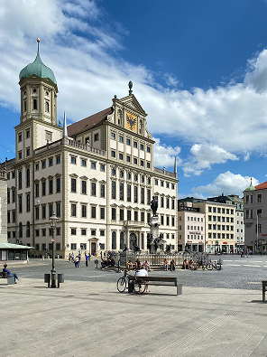
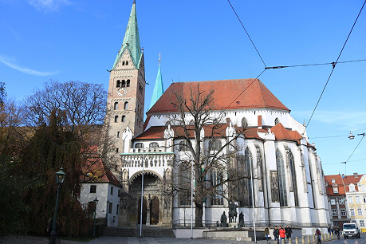
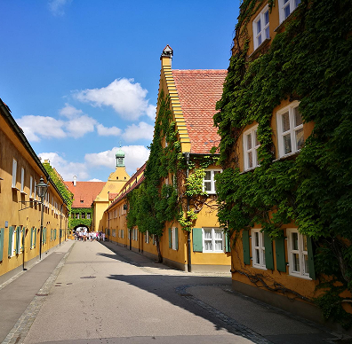
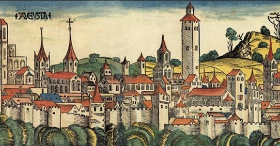
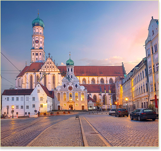

Символ города и выдающийся памятник архитектуры.

Один из древнейших соборов Германии.

Старейший социальный жилой квартал.
Аугсбург был основан римлянами более 2000 лет назад. В эпоху Возрождения город стал важным финансовым и торговым центром Европы благодаря династии Фуггеров. Сегодня он сохраняет уникальное сочетание средневековой архитектуры, каналов и современной городской жизни.

